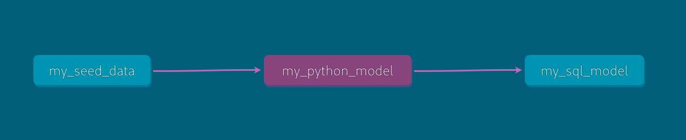

🐍 Using Python Models with dbt and DuckDB
This tutorial shows how to use Python models alongside SQL models in dbt with the dbt-duckdb adapter. With this setup, you can do data transformations using both SQL and Python (pandas) in the same pipeline!
🧰 0. Set Up a Python Virtual Environment
Before starting, create a virtual environment to isolate dependencies.
# Create a virtual environment
$ python -m venv .venv
# Activate it
$ source .venv/bin/activateOnce activated, install the required packages.
$ pip install dbt-duckdb duckdb pandas✅ 1. Prerequisites
With the virtual environment active, make sure you have:
- Python 3.8+
dbt-duckdbduckdbpandas
🏗️ 2. Initialize a dbt Project
$ dbt init dbt_duckdb_python_demo
$
$ cd dbt_duckdb_python_demoIn between choose duckdb as your adapter when prompted.
⚙️ 3. Configure profiles.yml
Edit your dbt profile (~/.dbt/profiles.yml) to look like this:
dbt_duckdb_python_demo:
target: dev
outputs:
dev:
type: duckdb
path: "dbt_duckdb_python_demo.duckdb"📂 4. Add Seed Data
Create a CSV file at seeds/my_seed_data.csv:
id,first_name,last_name
1,Alice,Smith
2,Bob,Jones
3,Charlie,BrownThen update your dbt_project.yml (if needed) to include:
seeds:
dbt_duckdb_python_demo:
my_seed_data:
file: seeds/my_seed_data.csvRun the seed:
$ dbt seed🐼 5. Create a Python Model
Create a file at models/my_python_model.py:
# models/my_python_model.py
import pandas as pd
def model(dbt, session):
dbt.config(materialized="table")
df = dbt.ref("my_seed_data")
df['full_name'] = df['first_name'] + ' ' + df['last_name']
df['name_length'] = df['full_name'].str.len()
return dfThis uses pandas to create new columns: full_name and name_length.
📄 6. Create a SQL Model
Now let’s add a SQL model that builds on the Python model.
Create models/my_sql_model.sql:
-- models/my_sql_model.sql
SELECT
id,
full_name,
name_length
FROM {{ ref('my_python_model') }}
WHERE name_length > 10This filters the data to only rows with a name longer than 10 characters.
▶️ 7. Run the Models
Now run everything:
$ dbt runYou should see both models build: - my_python_model (Python with pandas) - my_sql_model (classic SQL)
20:52:17 Running with dbt=1.9.4
20:52:17 Registered adapter: duckdb=1.9.2
20:52:18 Found 4 models, 1 seed, 4 data tests, 426 macros
20:52:18
20:52:18 Concurrency: 1 threads (target='dev')
20:52:18
20:52:18 1 of 4 START sql table model main.my_first_dbt_model ............... [RUN]
20:52:18 1 of 4 OK created sql table model main.my_first_dbt_model... [OK in 0.07s]
20:52:18 2 of 4 START python table model main.my_python_model................ [RUN]
20:52:18 2 of 4 OK created python table model main.my_python_model... [OK in 0.24s]
20:52:18 3 of 4 START sql view model main.my_second_dbt_model................ [RUN]
20:52:18 3 of 4 OK created sql view model main.my_second_dbt_model... [OK in 0.04s]
20:52:18 4 of 4 START sql view model main.my_sql_model....................... [RUN]
20:52:18 4 of 4 OK created sql view model main.my_sql_model.......... [OK in 0.02s]
20:52:18
20:52:18 Finished running 2 table models, 2 view models in
0 hours 0 minutes and 0.45 seconds (0.45s).
20:52:18
20:52:18 Completed successfully
20:52:18
20:52:18 Done. PASS=4 WARN=0 ERROR=0 SKIP=0 TOTAL=4🔍 8. View the Output in DuckDB
Launch the DuckDB CLI:
$ duckdb dbt_duckdb_python_demo.duckdbQuery the models:
D SELECT * FROM my_python_model;
┌───────┬────────────┬───────────┬───────────────┬─────────────┐
│ id │ first_name │ last_name │ full_name │ name_length │
│ int32 │ varchar │ varchar │ varchar │ int64 │
├───────┼────────────┼───────────┼───────────────┼─────────────┤
│ 1 │ Alice │ Smith │ Alice Smith │ 11 │
│ 2 │ Bob │ Jones │ Bob Jones │ 9 │
│ 3 │ Charlie │ Brown │ Charlie Brown │ 13 │
└───────┴────────────┴───────────┴───────────────┴─────────────┘D SELECT * FROM my_sql_model;
┌───────┬───────────────┬─────────────┐
│ id │ full_name │ name_length │
│ int32 │ varchar │ int64 │
├───────┼───────────────┼─────────────┤
│ 1 │ Alice Smith │ 11 │
│ 3 │ Charlie Brown │ 13 │
└───────┴───────────────┴─────────────┘✅ Summary
| Component | File | Description |
|---|---|---|
| Seed | my_seed_data.csv |
Sample input data |
| Python model | my_python_model.py |
Adds full_name and name_length |
| SQL model | my_sql_model.sql |
Filters names based on length |
🧠 What’s Next?
Add tests using
schema.ymlGenerate documentation:
$ dbt docs generate && dbt docs serve
Try using
sklearnorstatsmodelsin your Python models!